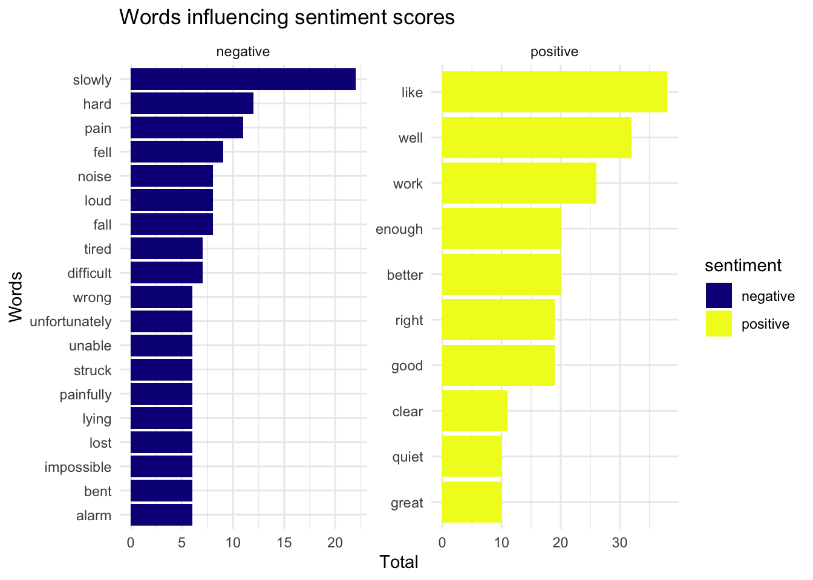
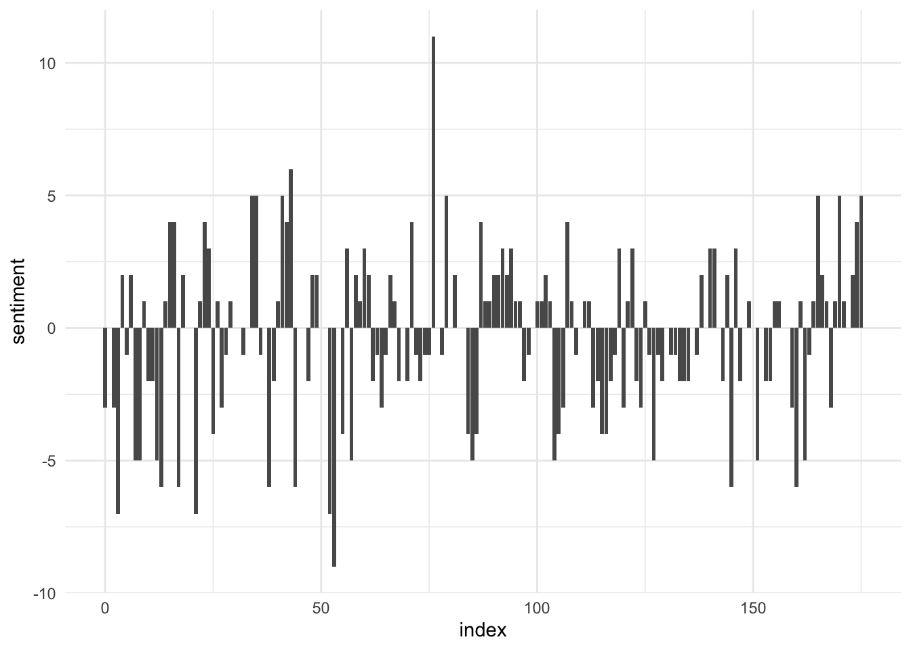
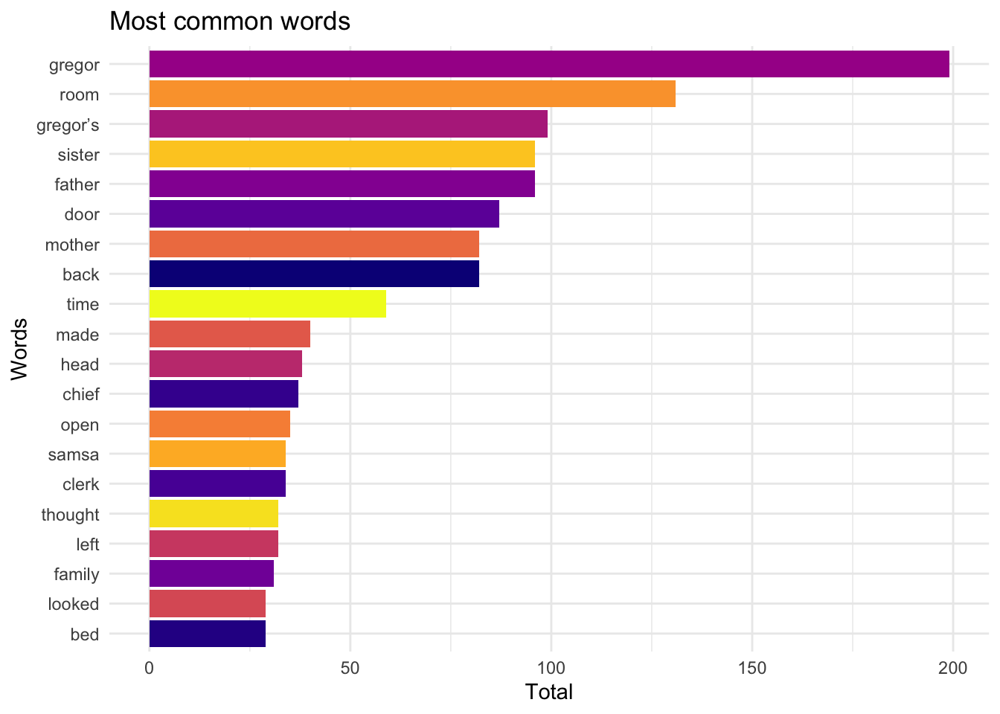

Metamorphosis <-
read.table("/Users/a209112/Downloads/datasets/metamorphosis_clean.txt", header = FALSE, sep = "\t", fill = TRUE) |>
rename (text = "V1") Tial’s Mini Project 1
“The Metamorphosis” from Kaggle :
Tokenize :
metamorph_tidy <- as_tibble(Metamorphosis) |>
mutate(line = row_number()) |>
unnest_tokens(word, text, token = "words")
metamorph_tidy # A tibble: 22,048 × 2
line word
<int> <chr>
1 1 i
2 2 one
3 2 morning
4 2 when
5 2 gregor
6 2 samsa
7 2 woke
8 2 from
9 2 troubled
10 2 dreams
# ℹ 22,038 more rowsMetamorphosis |> slice_tail(n = 10) text
1 better location and, most of all, more practical. All the time, Grete
2 was becoming livelier. With all the worry they had been having of late
3 her cheeks had become pale, but, while they were talking, Mr. and Mrs.
4 Samsa were struck, almost simultaneously, with the thought of how their
5 daughter was blossoming into a well built and beautiful young lady.
6 They became quieter. Just from each other’s glance and almost without
7 knowing it they agreed that it would soon be time to find a good man
8 for her. And, as if in confirmation of their new dreams and good
9 intentions, as soon as they reached their destination Grete was the
10 first to get up and stretch out her young body.metamorph_tidy |> slice_tail(n = 20)# A tibble: 20 × 2
line word
<int> <chr>
1 1754 as
2 1754 soon
3 1754 as
4 1754 they
5 1754 reached
6 1754 their
7 1754 destination
8 1754 grete
9 1754 was
10 1754 the
11 1755 first
12 1755 to
13 1755 get
14 1755 up
15 1755 and
16 1755 stretch
17 1755 out
18 1755 her
19 1755 young
20 1755 body Different str_ functions :
1.Finding words that start with “mon-”
str_view(metamorph_tidy$word,"^mon") [668] │ <mon>ey
[3560] │ <mon>ey
[8529] │ <mon>th
[9615] │ <mon>ey
[9706] │ <mon>ey
[10007] │ <mon>ey
[10042] │ <mon>ey
[10050] │ <mon>th
[10087] │ <mon>ey
[10127] │ <mon>ey
[10161] │ <mon>ey
[10173] │ <mon>ey
[10241] │ <mon>ey
[10283] │ <mon>ey
[10336] │ <mon>ey
[10814] │ <mon>th
[12147] │ <mon>otonous
[12156] │ <mon>ths
[14058] │ <mon>ogram
[14661] │ <mon>th
... and 2 more- Counting how many constants are in each word
metamorph_tidy |>
select(word) |>
mutate(n_vowels = str_count(word, "[^aeiou$]")) # A tibble: 22,048 × 2
word n_vowels
<chr> <int>
1 i 0
2 one 1
3 morning 5
4 when 3
5 gregor 4
6 samsa 3
7 woke 2
8 from 3
9 troubled 5
10 dreams 4
# ℹ 22,038 more rows- Detecting how often the word “family” comes up
metamorph_tidy |>
mutate(index = line%/%10, text_to_lower = str_to_lower(word)) |>
filter(str_detect(text_to_lower, "family")) |>
select(index, text_to_lower) # A tibble: 32 × 2
index text_to_lower
<dbl> <chr>
1 9 family
2 20 family
3 26 family
4 46 family
5 59 family
6 63 family
7 72 family
8 75 family
9 76 family
10 76 family
# ℹ 22 more rowsRegular Expression :
1.Counting how many words are in each line of text (top 5)
Metamorphosis |>
mutate(num_words = str_count(text, "\\b[A-Za-z'\\$]+\\b")) |>
select(num_words) |>
slice_max(order_by = num_words, n = 5) num_words
1 18
2 17
3 17
4 17
5 17
6 17
7 17
8 17
9 17
10 17
11 17
12 17
13 17
14 17
15 17
16 172.Highlighting words where the 3rd and 2nd characters appear again later in the word
str_view(metamorph_tidy$word, "(.)(.)(.).*\\3\\2") [84] │ <helple>ssly
[206] │ <hitti>ng
[323] │ c<areer>
[422] │ <bette>r
[536] │ <sitti>ng
[629] │ <sitti>ng
[1014] │ com<pletel>y
[1309] │ i<ndivid>ual
[1381] │ d<resse>d
[1448] │ wo<ndered>
[1455] │ the<mselves>
[1513] │ the<mselves>
[1517] │ <diffi>cult
[1560] │ m<oreover>
[1772] │ <follo>wed
[1843] │ <bette>r
[1850] │ c<onsciousn>ess
[1963] │ <bette>r
[2351] │ <diffi>culty
[2514] │ co<ndemned>
... and 145 more3.Extracting the first word from each line of text (top 5)
Metamorphosis |>
mutate(first_word = str_extract(text,"\\b[^ ]+\\b")) |>
select(first_word)|>
slice_head(n = 5) first_word
1 I
2 One
3 himself
4 armour-like
5 brownText Analysis Application :
1.Counting the numbers of positive and negative sentiments
get_sentiments(lexicon = "afinn")# A tibble: 2,477 × 2
word value
<chr> <dbl>
1 abandon -2
2 abandoned -2
3 abandons -2
4 abducted -2
5 abduction -2
6 abductions -2
7 abhor -3
8 abhorred -3
9 abhorrent -3
10 abhors -3
# ℹ 2,467 more rowsget_sentiments(lexicon = "nrc")# A tibble: 13,872 × 2
word sentiment
<chr> <chr>
1 abacus trust
2 abandon fear
3 abandon negative
4 abandon sadness
5 abandoned anger
6 abandoned fear
7 abandoned negative
8 abandoned sadness
9 abandonment anger
10 abandonment fear
# ℹ 13,862 more rowsget_sentiments(lexicon = "bing")# A tibble: 6,786 × 2
word sentiment
<chr> <chr>
1 2-faces negative
2 abnormal negative
3 abolish negative
4 abominable negative
5 abominably negative
6 abominate negative
7 abomination negative
8 abort negative
9 aborted negative
10 aborts negative
# ℹ 6,776 more rowssentiments <- get_sentiments(lexicon = "bing")
metamorph_tidy |>
inner_join(sentiments) |>
count(sentiment)Joining with `by = join_by(word)`# A tibble: 2 × 2
sentiment n
<chr> <int>
1 negative 604
2 positive 5522.Wordcloud for “The Metamorphosis” short novel
words <- metamorph_tidy |>
anti_join(stop_words) |>
count(word) |>
filter(word != "NA") |>
arrange(desc(n))Joining with `by = join_by(word)`morph_df <- words |>
slice_head(n = 80) |>
data.frame()
wordcloud2(
morph_df,
size = .67,
shape = 'circle',
minSize = 3
)Illustration
1.Horizontal bar chart to visualize word that contribute the most to sentiment scores
Joining with `by = join_by(word)`
2.Chart looking at the positive/negative sentiment trajectory over the short novel
Joining with `by = join_by(word)`
3.Most common words
get_stopwords() |> print(n = 20) # A tibble: 175 × 2
word lexicon
<chr> <chr>
1 i snowball
2 me snowball
3 my snowball
4 myself snowball
5 we snowball
6 our snowball
7 ours snowball
8 ourselves snowball
9 you snowball
10 your snowball
11 yours snowball
12 yourself snowball
13 yourselves snowball
14 he snowball
15 him snowball
16 his snowball
17 himself snowball
18 she snowball
19 her snowball
20 hers snowball
# ℹ 155 more rowsget_stopwords(source = "smart") |> print(n = 20) # A tibble: 571 × 2
word lexicon
<chr> <chr>
1 a smart
2 a's smart
3 able smart
4 about smart
5 above smart
6 according smart
7 accordingly smart
8 across smart
9 actually smart
10 after smart
11 afterwards smart
12 again smart
13 against smart
14 ain't smart
15 all smart
16 allow smart
17 allows smart
18 almost smart
19 alone smart
20 along smart
# ℹ 551 more rowssmart_stopwords <- get_stopwords(source = "smart")Joining with `by = join_by(word)`
Insight :
The short novel “The Metamorphosis” by Franz Kafka seems to be centered around the main protagonist named “Gregory” and his relationship with his family (Fig.3 & wordcloud). The setting takes place in Gregory’s home, specifically his room, where he lies in bed due to tiredness and experiencing pain (Fig.1). Despite how the overall emotional tone of the novel is neutral (Fig. 2), it could imply inner conflict or complex feelings. This assumption is based on how there are more words with negative connotations than positive connotations, despite it being balanced by the higher frequency of the words with positive sentiments (Fig.1).